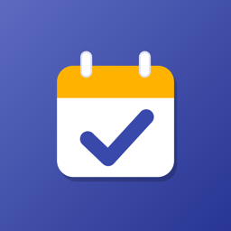

Política de privacidad
Agenda Escolar
Última actualización: 2 de noviembre de 2026
Esta política explica qué información maneja la aplicación para Android Agenda Escolar (la “App”), desarrollada por Oscar Ramírez (RamzLabs), Guadalajara, Jalisco, México (el “Desarrollador”), y cómo se utiliza.
- Tus materias, horarios, parciales, tareas y los datos de tus profesores se guardan solo en tu teléfono. La App no los sube a ningún servidor y el Desarrollador no puede verlos.
- La App no requiere crear una cuenta ni pide tu nombre, correo o teléfono.
- Los avisos de clases y tareas se programan en tu propio teléfono, sin conexión a internet.
- La App muestra anuncios de Google AdMob, que recopila ciertos datos del dispositivo (como el ID de publicidad) para mostrar y medir anuncios.
1. La información que guardas en la App
La App solo guarda lo que tú escribes en ella:
- Materias: nombre, color, notas, horario de clases (días, horas y salón) y si quieres un aviso antes de cada clase.
- Profesor de cada materia: nombre, teléfono y correo, si decides escribirlos.
- Parciales: nombre y fechas de inicio y fin.
- Tareas: título, notas, materia, fecha, hora, repetición, recordatorio y cuáles marcaste como hechas.
- Preferencias de la App, como si prefieres ver el horario en calendario o en lista.
Todo se guarda en una base de datos en el almacenamiento privado de la App dentro de tu dispositivo, y todo funciona sin internet. Para programar los avisos, la App usa la zona horaria configurada en tu teléfono.
Esta información no se envía a servidores del Desarrollador ni a terceros, no se analiza con fines publicitarios y no se comparte con Google ni con anunciantes.
2. Contactar a tus profesores
- El nombre, teléfono y correo de tus profesores los escribes tú. La App no lee tus contactos. Te recomendamos guardar solo los datos que el profesor compartió para asuntos de la clase.
- Cuando tocas Llamar, WhatsApp o Correo, la App abre el marcador, WhatsApp o tu app de correo con ese número o correo y, en WhatsApp y correo, un mensaje o asunto sugerido que puedes cambiar. La App no envía nada por sí misma: el mensaje solo sale si tú lo envías desde esa otra app, y en ese caso se aplican sus políticas de privacidad.
3. Avisos y widgets
- Avisos: los recordatorios de clases y tareas se programan con el sistema de alarmas de Android en tu teléfono; no pasan por ningún servidor. Muestran, por ejemplo, el nombre de la materia, el salón o el título de la tarea, y pueden verse en la pantalla de bloqueo según tus ajustes de Android. Puedes ocultar su contenido o desactivarlos en Ajustes de Android → Notificaciones, y elegir qué materias y tareas te avisan dentro de la App.
- Widgets: si agregas los widgets “Horario semanal”, “Próximas clases” o “Tareas” a tu pantalla de inicio, la App guarda en su almacenamiento privado una copia de los datos que muestran (tu horario y tus tareas próximas). Cualquiera que vea tu pantalla de inicio puede verlos; puedes quitar los widgets cuando quieras.
4. Copia de seguridad de Android
Si tienes activada la copia de seguridad de Android en tu cuenta de Google, Android puede incluir los datos de la App en esa copia para restaurarlos si cambias de teléfono o reinstalas la App. Esa copia la guarda Google en tu cuenta, según sus propias políticas, y el Desarrollador no tiene acceso a ella. Puedes desactivarla en Ajustes de Android → Google → Copia de seguridad (el nombre puede variar según el teléfono).
5. Publicidad (Google AdMob)
La App es gratuita y usa Google AdMob para mostrar anuncios: un banner en la parte inferior de las pantallas principales y, de vez en cuando, un anuncio de pantalla completa al guardar una materia, un parcial o una tarea nueva. El SDK de Google Mobile Ads puede recopilar y procesar automáticamente:
- El ID de publicidad de Android.
- La dirección IP y la ubicación aproximada derivada de ella.
- Información del dispositivo y del sistema (modelo, versión de Android, idioma).
- Interacciones con los anuncios y datos de diagnóstico y rendimiento.
Google usa estos datos para mostrar anuncios, medir su rendimiento, prevenir fraudes y, cuando lo permites, personalizar la publicidad. Más información:
6. Consentimiento y control de los anuncios
- Si te encuentras en el Espacio Económico Europeo, el Reino Unido o Suiza, la App te pedirá tu consentimiento antes de usar tus datos para anuncios personalizados. Puedes cambiar tu elección en cualquier momento desde Hoy → Ajustes (⚙) → Privacidad de anuncios.
- En cualquier país puedes restablecer o eliminar tu ID de publicidad, o desactivar la personalización de anuncios, en Ajustes de Android → Google → Anuncios (o Ajustes → Seguridad y privacidad → Otros ajustes de privacidad → Anuncios).
7. Permisos de la App
- Internet y estado de la red: solo para cargar anuncios. Tu agenda no se transmite por internet.
- ID de publicidad: lo usa AdMob según lo descrito arriba.
- Notificaciones: para los avisos de clases y los recordatorios de tareas. Android 13 o posterior te pide permiso; si no lo das, la App funciona igual pero sin avisos.
- Alarmas y recordatorios (opcional): para que los avisos lleguen al minuto exacto. Tú lo activas desde Ajustes → Avisos a la hora exacta.
- Ejecutar al iniciar el teléfono: para volver a programar los avisos después de reiniciar.
La App no accede a tus contactos, fotos, archivos, cámara, micrófono ni ubicación precisa.
8. Conservación y eliminación de datos
Tu información permanece en tu dispositivo hasta que la eliminas desde la App (cada tarea, parcial o materia se puede eliminar; al eliminar una materia eliges si también se borran sus tareas), borras los datos de la App desde los ajustes de Android o la desinstalas. Como el Desarrollador no guarda copias, no puede recuperarla si se pierde. Para la copia de seguridad de tu cuenta de Google y los datos que trata AdMob, consulta las políticas de Google.
9. Seguridad
Tu agenda se guarda en el almacenamiento privado de la App, al que otras aplicaciones no pueden acceder. Te recomendamos proteger tu teléfono con bloqueo de pantalla.
10. Menores de edad
La App es una herramienta de organización que no está dirigida a menores de 13 años. No recopilamos de forma intencional información de menores.
11. Cambios a esta política
Podemos actualizar esta política. Publicaremos la versión vigente en esta misma página con su fecha de actualización.
12. Contacto
Si tienes preguntas sobre esta política o sobre tus datos, escribe a oscarivanramirezruiz96@gmail.com.